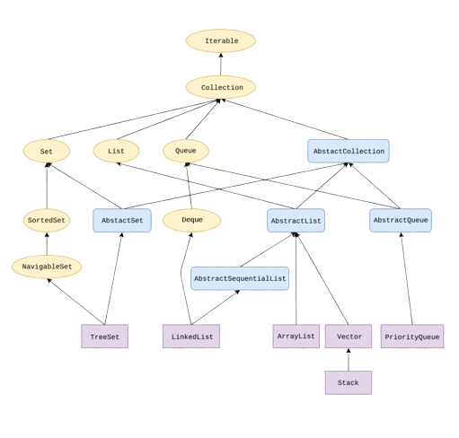
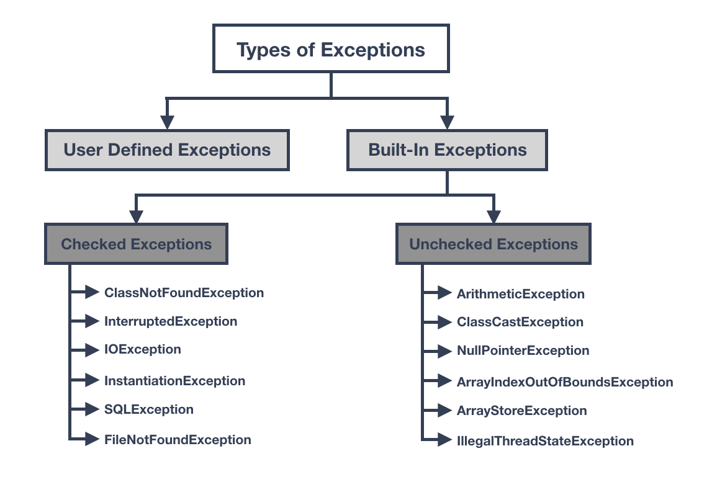

History Of Java
Java is a programming language and a platform. Java is a high-level, robust,
object-oriented, and secure programming language.
Java was developed by Sun Microsystems (now a subsidiary of Oracle) in 1995. James
Gosling is known as the father of Java. Before Java, its name was Oak. Since Oak was
already a registered company, James Gosling and his team changed the name from Oak to
Java.
Platform: Any hardware or software environment in which a program runs is known
as a platform. Since Java has a runtime environment (JRE) and API, it is called a
platform.

Key Milestones
- 1991: The Green Project begins, which later becomes Java.
- 1995: Java 1.0 is released, making Java accessible to developers.
- 2004: Java 5 introduces generics and enhanced for-each loop, revolutionizing
Java's type system.
- 2011: Java 7 adds features like try-with-resources and the diamond operator,
simplifying resource management and code readability.
- 2014: Java 8 introduces lambdas, streams, and the java.time package, enabling
functional programming paradigms and modern date-time handling.
These milestones have contributed to Java's enduring popularity and its use in various
domains, including web development, mobile app development, and enterprise applications.
Java Platforms / Editions
There are 4 platforms or editions of Java:
1) Java SE (Java Standard Edition): It is a Java programming platform. It
includes Java programming APIs such as java.lang, java.io, java.net, java.util,
java.sql, java.math, etc. It includes core topics like OOPs, String, Regex, Exception,
Inner classes, Multithreading, I/O Stream, Networking, AWT, Swing, Reflection,
Collection, etc.
2) Java EE (Java Enterprise Edition): It is an enterprise platform mainly used
to develop web and enterprise applications. It is built on top of the Java SE platform.
It includes topics like Servlet, JSP, Web Services, EJB, JPA, etc.
3) Java ME (Java Micro Edition): It is a micro platform dedicated to mobile
applications.
4) JavaFX: It is used to develop rich internet applications and uses a
lightweight user interface API.
Data Types in Java
Data types in Java are used to define the type of data that a variable can hold. Java is a statically
typed language, which means that all variables must have a specific data type at the time of declaration.
Java provides a rich set of data types to handle various kinds of data, from simple integers to complex
objects. Data types in Java can be categorized into two main groups: primitive data types and reference
data types.
Primitive Data Types
Primitive data types represent simple values, and they are the building blocks of data manipulation in
Java. There are eight primitive data types in Java:
- byte: A 1-byte integer data type that can store values from -128 to 127.
- short: A 2-byte integer data type capable of holding values in the range of -32,768 to 32,767.
- int: A 4-byte integer data type used to store whole numbers within the range of approximately
-2 billion to 2 billion.
- long: An 8-byte integer data type for very large whole numbers, ranging from
-9,223,372,036,854,775,808 to 9,223,372,036,854,775,807.
- float: A 4-byte floating-point data type for decimal numbers with single precision. It can
represent numbers with up to 7 significant digits.
- double: An 8-byte floating-point data type for decimal numbers with double precision. It can
represent numbers with up to 15 significant digits.
- char: A 2-byte character data type used to store a single character or a Unicode character.
- boolean: A data type with only two possible values, true or false, used for boolean logic.
These primitive data types are essential for performing arithmetic operations, storing values, and
making decisions in Java programs. Choosing the right data type is crucial for efficient memory usage
and accurate representation of data.
Reference Data Types
Reference data types, also known as non-primitive data types, do not store actual values but rather
references (addresses) to objects in memory. Java provides several reference data types, and you can also
create your own custom reference data types using classes and interfaces. Some commonly used reference
data types include:
- Classes: Classes define the blueprint for creating objects. They encapsulate data and behavior
into a single unit.
- Interfaces: Interfaces provide a contract for classes to implement. They define a set of
methods that must be implemented by classes that implement the interface.
- Arrays: Arrays are collections of elements of the same data type. They can hold multiple values
of the same type in a single variable.
- Enumerations (Enums): Enums are a special data type that defines a set of constant values,
allowing you to create a variable that can only be assigned one of those values.
Reference data types are used to create complex data structures and model real-world entities in Java
programs. They enable object-oriented programming and are fundamental to building applications with
extensive functionality.

Java Strings
In Java, a string is essentially an object that represents a sequence of character values. An array of characters works the same way as a Java string. For example:
char[] ch = {'j', 'a', 'v', 'a', 't', 'p', 'o', 'i', 'n', 't'};
String s = new String(ch);
This is the same as:
String s = "javatpoint";
The Java String class provides numerous methods to perform operations on strings, such as compare(), concat(), equals(), split(), length(), replace(), compareTo(), intern(), substring(), and many more.
The java.lang.String class implements the Serializable, Comparable, and CharSequence interfaces.
Creating String Objects
There are two ways to create String objects:
- String Literal: Java String literal is created by using double quotes. For example:
String s = "welcome";
Each time you create a string literal, the JVM checks the "string constant pool" first. If the string already exists in the pool, a reference to the pooled instance is returned. If the string doesn't exist in the pool, a new string instance is created and placed in the pool.
By string literal, Java saves memory because no new objects are created if the string already exists in the string constant pool.
- By new Keyword: You can also create a String object using the
new keyword:
String s = new String("Welcome"); // Creates two objects and one reference variable
In this case, the JVM creates a new string object in normal (non-pool) heap memory, and the literal "Welcome" will be placed in the string constant pool.
Java String Example
Here's an example of creating and using string objects:
public class StringExample {
public static void main(String[] args) {
String s1 = "java"; // Creating string by Java string literal
char[] ch = {'s', 't', 'r', 'i', 'n', 'g', 's'};
String s2 = new String(ch); // Converting char array to string
String s3 = new String("example"); // Creating Java string by new keyword
System.out.println(s1);
System.out.println(s2);
System.out.println(s3);
}
}
This code converts a char array into string objects and displays them using System.out.println().
Object-Oriented Programming (OOPs) in Java
Object-Oriented Programming (OOP) is a fundamental paradigm in software development that is widely used in Java.
It revolves around the concept of "objects" and "classes" to structure code and represent real-world entities
seamlessly. OOP promotes modularity, reusability, and easier code maintenance.
Key Concepts of OOPs:
1. Object:
An object is a fundamental building block of OOP. It represents a real-world entity or concept and encapsulates
both data (attributes) and behaviors (methods). For example, a "Car" object can have attributes like "color,"
"model," and behaviors like "start" and "stop."
2. Class:
A class is a blueprint or template for creating objects. It defines the structure and behavior that its objects
will possess. Think of it as a recipe for creating objects. For instance, a "Car" class defines what a car is and
what it can do.
3. Inheritance:
Inheritance is a mechanism that allows one class (the child or subclass) to inherit the properties and behaviors
of another class (the parent or superclass). It promotes code reusability and represents an "is-a" relationship.
For instance, a "SportsCar" class can inherit from the "Car" class.
4. Polymorphism:
Polymorphism means "many forms." It enables objects of different classes to be treated as objects of a common
superclass. It's achieved through method overriding and method overloading, allowing flexibility in method
implementation. For example, both a "Car" and a "SportsCar" can have a "start" method, but they behave
differently.
5. Abstraction:
Abstraction involves hiding complex implementation details and showing only essential features of an object. It
helps manage code complexity and provides a clear separation between what an object does and how it does it.
Abstract classes and interfaces are used for abstraction.
6. Encapsulation:
Encapsulation is the bundling of data (attributes) and methods (behaviors) that operate on the data into a single
unit known as a class. Access to the internal state of an object is controlled through access modifiers like
private, public, and protected.
7. Association, Aggregation, and Composition:
These concepts define how objects are related to each other. Association represents a basic relationship between
objects. Aggregation is a stronger association, where one object contains other objects but has independent
existence. Composition is a more restrictive form of aggregation, where the contained objects have no meaningful
existence outside the container object.
Benefits of OOPs in Java:
Object-Oriented Programming offers several advantages in Java, including:
- Modularity: Code is organized into reusable and maintainable modules (classes).
- Reusability: Classes and objects can be reused in different parts of an application or in other
applications.
- Flexibility: OOP allows for easy modification and extension of code as requirements change.
- Abstraction: Complex systems can be simplified by abstracting away unnecessary details.
- Encapsulation: Data is protected from unauthorized access, enhancing data security.
- Polymorphism: Multiple classes can be treated as instances of a common superclass, improving code
flexibility.
- Inheritance: Code reuse is facilitated through the inheritance mechanism.
Popular Object-Oriented Languages:
While Java is a prominent object-oriented language, several other languages follow the OOP paradigm. Some of
these languages include C++, C#, Python, Ruby, and PHP, each with its own unique features and use cases.
Real Life Example
Certainly! Let's illustrate the Object-Oriented Programming (OOPs) concepts in Java with a real-world example of a basic "Vehicle" hierarchy:
// Base class - Vehicle
class Vehicle {
private String brand;
private int year;
// Constructor
public Vehicle(String brand, int year) {
this.brand = brand;
this.year = year;
}
// Method to start the vehicle
public void start() {
System.out.println("Starting the " + year + " " + brand + "...");
}
// Getter for brand
public String getBrand() {
return brand;
}
// Getter for year
public int getYear() {
return year;
}
}
// Derived class - Car (inherits from Vehicle)
class Car extends Vehicle {
private int numberOfDoors;
// Constructor
public Car(String brand, int year, int numberOfDoors) {
super(brand, year); // Call the superclass constructor
this.numberOfDoors = numberOfDoors;
}
// Method to display car details
public void displayCarDetails() {
System.out.println("Car Details:");
System.out.println("Brand: " + getBrand());
System.out.println("Year: " + getYear());
System.out.println("Number of Doors: " + numberOfDoors);
}
}
// Derived class - Motorcycle (inherits from Vehicle)
class Motorcycle extends Vehicle {
// Constructor
public Motorcycle(String brand, int year) {
super(brand, year); // Call the superclass constructor
}
// Method to perform a wheelie (unique to motorcycles)
public void performWheelie() {
System.out.println("Performing a wheelie with the " + getBrand() + " motorcycle!");
}
}
public class Main {
public static void main(String[] args) {
// Create a car object
Car myCar = new Car("Toyota", 2022, 4);
myCar.start(); // Call the start method from the Vehicle class
myCar.displayCarDetails(); // Call the displayCarDetails method from the Car class
// Create a motorcycle object
Motorcycle myMotorcycle = new Motorcycle("Harley-Davidson", 2021);
myMotorcycle.start(); // Call the start method from the Vehicle class
myMotorcycle.performWheelie(); // Call the performWheelie method from the Motorcycle class
}
}
In this example:
-
Vehicle is the base class that represents common attributes and behaviors of all vehicles, such as the brand and year of manufacture. It also has a start method to start the vehicle.
-
Car is a derived class that inherits from Vehicle. It adds a unique attribute, numberOfDoors, and a method displayCarDetails to display car-specific information.
-
Motorcycle is another derived class that also inherits from Vehicle. It has a unique method, performWheelie, which is specific to motorcycles.
-
In the main method, we create instances of both Car and Motorcycle and demonstrate how OOPs concepts like inheritance, encapsulation, and polymorphism work in Java. The code is organized, reusable, and follows OOP principles.
Collections in Java
Collections are an essential part of Java programming, providing dynamic data structures to
store and manipulate data. Java's collections framework includes interfaces and classes for
various data structures like lists, sets, maps, and queues.
Common Collection Interfaces
- List: Ordered collection with duplicates allowed (e.g., ArrayList). Lists provide
flexibility for tasks like maintaining order and supporting random access.
- Set: Unordered collection with no duplicates (e.g., HashSet). Sets are useful for
scenarios where uniqueness is crucial.
- Map: Key-value pairs (e.g., HashMap). Maps allow efficient data retrieval based on
keys.
- Queue: A collection to hold elements for processing (e.g., PriorityQueue). Queues
facilitate tasks like managing tasks in a priority-based manner.
Understanding these collection interfaces and their implementations is vital for effective
Java development, as they serve as building blocks for numerous algorithms and data
manipulation tasks.
Code Examples
Let's explore a few code examples to see how Java collections are used:
Using ArrayList (List Interface)
import java.util.ArrayList;
import java.util.List;
public class ArrayListExample {
public static void main(String[] args) {
// Create an ArrayList of strings
List names = new ArrayList<>();
// Add elements to the list
names.add("Alice");
names.add("Bob");
names.add("Charlie");
// Access elements by index
String firstPerson = names.get(0);
System.out.println("First person: " + firstPerson);
// Iterate through the list
for (String name : names) {
System.out.println("Name: " + name);
}
}
}
Using HashSet (Set Interface)
import java.util.HashSet;
import java.util.Set;
public class HashSetExample {
public static void main(String[] args) {
// Create a HashSet of integers
Set numbers = new HashSet<>();
// Add elements to the set
numbers.add(1);
numbers.add(2);
numbers.add(3);
// Add a duplicate element (ignored)
numbers.add(1);
// Iterate through the set
for (int number : numbers) {
System.out.println("Number: " + number);
}
}
}
Java Collections Framework Image

Map Interface
The Map interface in Java is a part of the collections framework and represents a collection of key-value
pairs, where each key is associated with a unique value. Maps are used for data storage, retrieval, and
manipulation based on keys. Unlike lists and sets, maps store elements as pairs, consisting of a key and its
corresponding value.
Key characteristics of the Map interface:
- Stores elements as key-value pairs.
- Keys are unique within a map; each key maps to exactly one value.
- Allows fast retrieval of values based on keys.
Commonly used implementations of the Map interface in Java include HashMap, LinkedHashMap,
TreeMap, and Hashtable.
Code Example Using HashMap
import java.util.HashMap;
import java.util.Map;
public class HashMapExample {
public static void main(String[] args) {
// Create a HashMap to store student grades
Map studentGrades = new HashMap<>();
// Add key-value pairs to the map
studentGrades.put("Alice", 95);
studentGrades.put("Bob", 88);
studentGrades.put("Charlie", 92);
// Access and print grades using keys
int aliceGrade = studentGrades.get("Alice");
System.out.println("Alice's Grade: " + aliceGrade);
// Iterate through the map to print all grades
for (Map.Entry entry : studentGrades.entrySet()) {
String studentName = entry.getKey();
int grade = entry.getValue();
System.out.println(studentName + "'s Grade: " + grade);
}
}
}
In this example, we use a HashMap to store student grades as key-value pairs. The keys are student names,
and the values are their corresponding grades. We demonstrate how to add entries to the map, retrieve values by
keys, and iterate through the map to access all entries.
The Map interface is widely used in various applications, including databases, caching, and organizing data
with unique identifiers.
Exception Handling in Java
Exception handling in Java is a powerful mechanism to manage and deal with runtime errors, ensuring the normal flow
of an application can be maintained. This critical feature enables developers to handle various types of
exceptions gracefully.
What is Exception in Java?
In Java, an exception is an event that disrupts the normal flow of a program. It is represented as an object
thrown at runtime when an exceptional condition occurs.
What is Exception Handling?
Exception handling is a mechanism to manage and respond to runtime errors such as ClassNotFoundException, IOException,
SQLException, RemoteException, and more. It allows developers to anticipate potential issues and implement strategies
for handling them gracefully.
Advantages of Exception Handling
Exception handling offers several advantages:
- It maintains the normal flow of the application even in the presence of exceptions.
- Without exception handling, unhandled exceptions can lead to program termination.
- It provides a structured way to deal with expected exceptions.
Hierarchy of Java Exception Classes
The Java exception hierarchy consists of two main classes: Exception and Error. These are
inherited from the root class Throwable. Exceptions are further categorized into checked and unchecked
exceptions.
Types of Java Exceptions
Java exceptions are classified into three main types:
- Checked Exception: These are exceptions that are checked at compile-time and must be explicitly handled.
- Unchecked Exception: Also known as runtime exceptions, these exceptions are not checked at compile-time.
- Error: Errors are irrecoverable and typically indicate severe issues like memory exhaustion.
Java Exception Keywords
Java provides five keywords for exception handling:
| Keyword |
Description |
try |
Specifies a block of code where an exception might occur. |
catch |
Handles exceptions and must follow a try block. |
finally |
Executes code whether an exception is handled or not, and follows a try or catch block. |
throw |
Used to throw custom exceptions. |
throws |
Declares exceptions that a method may throw and follows the method's signature. |
Java Exception Handling Example
Here's an example of exception handling in Java:
public class JavaExceptionExample {
public static void main(String[] args) {
try {
int data = 100 / 0; // This line will throw an ArithmeticException
} catch (ArithmeticException e) {
System.out.println(e); // Handle the exception
}
System.out.println("Rest of the code...");
}
}
In this example, an ArithmeticException is thrown when attempting to divide by zero. The exception is
caught and handled within the catch block.
Common Scenarios of Java Exceptions
Here are some common scenarios where unchecked exceptions may occur:
- Division by zero leading to an
ArithmeticException.
- Accessing methods or properties on a null object, resulting in a
NullPointerException.
- Attempting to parse a non-numeric string, causing a
NumberFormatException.
- Accessing an array element out of its bounds, triggering an
ArrayIndexOutOfBoundsException.
Exception handling is a crucial aspect of Java programming, allowing developers to build robust and reliable
applications. Understanding and effectively implementing exception handling strategies is essential for writing
production-ready Java code.

Multithreading in Java
Multithreading is a fundamental concept in Java that enables the execution of multiple threads or
lightweight sub-processes concurrently. Threads allow a program to perform multiple tasks independently,
making the most efficient use of system resources and enabling better responsiveness in applications.
Advantages of Java Multithreading
Multithreading provides several advantages in Java programming:
- Concurrent Execution: Java threads run independently, allowing for concurrent execution of
tasks within a single program. This is particularly beneficial in applications where tasks need to be
performed simultaneously.
- Resource Efficiency: Unlike processes, threads within the same process share the same memory
space, reducing the overhead of creating separate memory areas for each task. This leads to better
memory utilization and efficiency.
- Responsiveness: Multithreading enhances the responsiveness of applications. For example, in a
graphical user interface (GUI) application, one thread can handle user input while another thread
processes data or performs background tasks, ensuring that the application remains responsive to user
interactions.
- Error Isolation: Threads in Java are independent, meaning that an exception or error occurring
in one thread does not impact the execution of other threads. This allows for more robust and
fault-tolerant applications.
Java Thread Class
To work with multithreading in Java, the Thread class is provided. The Thread
class offers constructors and methods for creating and managing threads. Threads in Java extend the
Thread class or implement the Runnable interface.
Some commonly used methods of the Thread class include start(),
run(), sleep(), join(), and setName(), among others.
Here's a simple example of creating and starting a thread in Java:
class MyThread extends Thread {
public void run() {
for (int i = 1; i <= 5; i++) {
System.out.println("Thread: " + i);
}
}
}
public class Main {
public static void main(String[] args) {
MyThread thread1 = new MyThread();
MyThread thread2 = new MyThread();
thread1.start();
thread2.start();
}
}
In this example, we've created a simple custom thread by extending the Thread class. The
run() method defines the task the thread will perform. We then create two instances of this
thread and start them using the start() method.